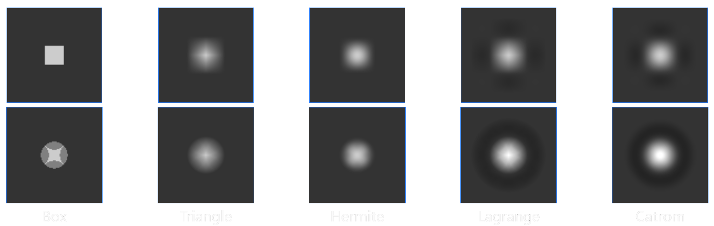

Some of you may be familiar with the blog post I made about mpv's scaling filters a while ago, but it was never really meant to be shared as much as it did. That page was originally the result of an assignment that I had during my undergrad, when I was formally studying digital image processing for the first time. Naturally, it was full of mistakes and the results weren't particularly scientific. I got a lot of feedback and the page ended up evolving in an organic way, but it still has some fundamental issues that can not be fixed without a major change in the methodology.
From the top of my head I can enumerate the following problems:
So, to address these issues:
With that out of the way, we can proceed with the real introduction.
Resampling is the process of changing the number of samples of a discrete signal to obtain a new discrete representation of the underlying continuous signal. This definition comes from the idea of having a sensor of some kind producing an analog continuous-time voltage/current variance which is then periodically sampled and quantised into predefined amplitude levels so we can store it in bits/bytes.
The easiest and most classic way of resampling to a higher sample rate is via linear interpolation, if you want to find a value between two points you can simply draw a line between them. Linear interpolation can be done in a cartesian plane, through both axis, creating what we call "bilinear" interpolation. Bilinear interpolation is the simplest interpolation algorithm, the easiest to compute and probably the most widespread one.
But can something as simple as just drawing a line between 2 points give us good results? Sometimes it does, sometimes it doesn't. It really depends on the signal. Instead of taking 2 points and drawing a line, we could take more than 2 points and draw a higher-degree curve. The shape of the curve depends on the weights used in the calculation, and these weights depend on the chosen filter. The number of input samples in the calculation depends on the length/radius/support of the filter. If you want to understand how this is actually done, I suggest simply reading this explanation.
In short, the most common way of resampling images is treating each row/column as an independent 1-D signal and simply going over all of them until you have resampled the entire image. This means you have to choose a dimension to resample first but this is pretty much inconsequential to the end result. The resampling algorithm itself is pretty simple, for each output sample you simply centralise the filter on top of it and see which input samples end up inside of the window after you compute their equivalent positions, then you multiply these inputs by their corresponding weights depending on their distance to the centre.
There's a different method, usually called polar/cylindrical/elliptical resampling, that does the operation in the 2-D domain directly. The only difference here is that all samples that fit inside the 2-D filter will now be weighted simultaenously, which may drastically change how some filters behave since we're only calling the filter once per output pixel rather than twice as before.

In this page I'll include results for both orthogonal and polar resampling. It's important to note that polar resampling implementations are generally slower and most filters weren't really designed to be used in this way (the most "famous" exception being polar lanczos, since we replace the sinc function with its 2-D "equivalent", the jinc/sombrero function).
As stated before the entire Manga109 dataset will be used in this comparison. This dataset has manga covers that look like this:
The dataset is downscaled with:
magick mogrify -colorspace rgb -filter box -resize 50% -colorspace srgb -path low_res inputs/*.png
The dataset is then brought back up with the following command for orthogonal resampling:
magick mogrify -colorspace RGB +sigmoidal-contrast 7.5 -filter {resampling_filter} -resize 200% -sigmoidal-contrast 7.5 -colorspace sRGB -path high_res low_res/*.png
And the following command for polar resampling:
magick mogrify -colorspace RGB +sigmoidal-contrast 7.5 -filter {resampling_filter} -distort Resize 200% -sigmoidal-contrast 7.5 -colorspace sRGB -path high_res low_res/*.png
The
['Bartlett',
'Blackman',
'Bohman',
'Box',
'Catrom',
'Cosine',
'Cubic',
'Gaussian',
'Hamming',
'Hann',
'Hermite',
'Jinc',
'Kaiser',
'Lagrange',
'Lanczos',
'Lanczos2',
'Lanczos2Sharp',
'LanczosRadius',
'LanczosSharp',
'Mitchell',
'Parzen',
'Point',
'Quadratic',
'Robidoux',
'RobidouxSharp',
'Sinc',
'SincFast',
'Spline',
'CubicSpline',
'Triangle',
'Welch']
For a much better explanation of these filters, please check this page from Imagemagick.
The result is then evaluated with MAE, PSNR, SSIM and MS-SSIM. All calculations are done with all three RGB channels and in double-precision floating-point for accuracy. Metrics are normalised between [0, 1] and then averaged together with a normal arithmetic mean.
Please note that some of those filters are just aliases to other filters or aliases to sinc/jinc with different windows.
LanczosRadius is supposed to be a jinc-windowed jinc sharpened to have its third zero crossing at 3 instead of 3.2383154841662362.
LanczosSharp and Lanczos2Sharp are both supposed to be sharper jinc-windowed jincs since the original filters ended up too soft when compared to their sinc-windowed sinc orthogonal equivalents.
None of those sharper lanczoses make any sense to be used in orthogonal resampling, since you'll be sharpening the sinc instad of the jinc (Imagemagick replaces them automatically), but I've decided to keep all the results for completeness.
| Filter | MAE | PSNR | SSIM | MS-SSIM | MAE (N) | PSNR (N) | SSIM (N) | MS-SSIM (N) | Mean |
| LanczosSharp | 0.0163 | 30.3992 | 0.9391 | 0.9952 | 1.0000 | 0.9973 | 0.9716 | 0.9944 | 0.9908 |
| Polar_Catrom | 0.0164 | 30.2800 | 0.9411 | 0.9953 | 0.9860 | 0.9704 | 1.0000 | 1.0000 | 0.9891 |
| Hamming | 0.0163 | 30.4113 | 0.9384 | 0.9950 | 0.9932 | 1.0000 | 0.9621 | 0.9826 | 0.9845 |
| Cosine | 0.0164 | 30.3786 | 0.9378 | 0.9950 | 0.9859 | 0.9926 | 0.9536 | 0.9796 | 0.9779 |
| Polar_Lagrange | 0.0166 | 30.3581 | 0.9396 | 0.9949 | 0.9686 | 0.9880 | 0.9784 | 0.9766 | 0.9779 |
| Welch | 0.0164 | 30.3915 | 0.9376 | 0.9949 | 0.9834 | 0.9955 | 0.9497 | 0.9781 | 0.9767 |
| Lanczos | 0.0164 | 30.3221 | 0.9379 | 0.9949 | 0.9837 | 0.9799 | 0.9550 | 0.9791 | 0.9744 |
| LanczosRadius | 0.0164 | 30.3221 | 0.9379 | 0.9949 | 0.9837 | 0.9799 | 0.9550 | 0.9791 | 0.9744 |
| Hann | 0.0165 | 30.2987 | 0.9377 | 0.9948 | 0.9779 | 0.9746 | 0.9515 | 0.9716 | 0.9689 |
| Kaiser | 0.0165 | 30.2733 | 0.9378 | 0.9948 | 0.9784 | 0.9688 | 0.9533 | 0.9731 | 0.9684 |
| Bartlett | 0.0165 | 30.2282 | 0.9377 | 0.9949 | 0.9764 | 0.9586 | 0.9520 | 0.9752 | 0.9656 |
| Blackman | 0.0166 | 30.1354 | 0.9372 | 0.9947 | 0.9636 | 0.9377 | 0.9440 | 0.9667 | 0.9530 |
| Bohman | 0.0166 | 30.1085 | 0.9371 | 0.9947 | 0.9613 | 0.9316 | 0.9425 | 0.9667 | 0.9505 |
| Polar_LanczosRadius | 0.0167 | 30.1668 | 0.9355 | 0.9946 | 0.9536 | 0.9448 | 0.9205 | 0.9570 | 0.9440 |
| Parzen | 0.0168 | 29.9988 | 0.9364 | 0.9946 | 0.9473 | 0.9068 | 0.9329 | 0.9612 | 0.9371 |
| Polar_RobidouxSharp | 0.0172 | 29.7304 | 0.9337 | 0.9946 | 0.9070 | 0.8462 | 0.8951 | 0.9598 | 0.9020 |
| Lanczos2Sharp | 0.0172 | 29.6361 | 0.9344 | 0.9947 | 0.8993 | 0.8249 | 0.9048 | 0.9644 | 0.8984 |
| Polar_CubicSpline | 0.0176 | 29.7738 | 0.9369 | 0.9933 | 0.8587 | 0.8560 | 0.9408 | 0.8811 | 0.8842 |
| Sinc | 0.0179 | 30.2249 | 0.9297 | 0.9937 | 0.8327 | 0.9579 | 0.8377 | 0.9046 | 0.8832 |
| SincFast | 0.0179 | 30.2249 | 0.9297 | 0.9937 | 0.8327 | 0.9579 | 0.8377 | 0.9046 | 0.8832 |
| Polar_LanczosSharp | 0.0173 | 29.8697 | 0.9308 | 0.9936 | 0.8888 | 0.8777 | 0.8534 | 0.8982 | 0.8795 |
| CubicSpline | 0.0175 | 29.6101 | 0.9318 | 0.9938 | 0.8765 | 0.8190 | 0.8676 | 0.9129 | 0.8690 |
| Lanczos2 | 0.0175 | 29.5422 | 0.9322 | 0.9940 | 0.8708 | 0.8037 | 0.8741 | 0.9248 | 0.8683 |
| Catrom | 0.0175 | 29.4788 | 0.9320 | 0.9940 | 0.8687 | 0.7894 | 0.8705 | 0.9261 | 0.8637 |
| Polar_Cosine | 0.0176 | 29.7521 | 0.9289 | 0.9932 | 0.8627 | 0.8511 | 0.8266 | 0.8749 | 0.8538 |
| Polar_Lanczos | 0.0176 | 29.7521 | 0.9289 | 0.9932 | 0.8627 | 0.8511 | 0.8266 | 0.8749 | 0.8538 |
| Polar_Welch | 0.0176 | 29.7521 | 0.9289 | 0.9932 | 0.8627 | 0.8511 | 0.8266 | 0.8749 | 0.8538 |
| Polar_Hann | 0.0177 | 29.6535 | 0.9285 | 0.9931 | 0.8511 | 0.8288 | 0.8214 | 0.8713 | 0.8432 |
| Polar_Bartlett | 0.0177 | 29.6043 | 0.9287 | 0.9931 | 0.8513 | 0.8177 | 0.8231 | 0.8712 | 0.8408 |
| Polar_Mitchell | 0.0179 | 29.2988 | 0.9290 | 0.9935 | 0.8295 | 0.7487 | 0.8283 | 0.8956 | 0.8255 |
| Polar_Hamming | 0.0179 | 29.5229 | 0.9275 | 0.9928 | 0.8322 | 0.7993 | 0.8062 | 0.8509 | 0.8222 |
| Polar_Kaiser | 0.0180 | 29.4493 | 0.9272 | 0.9927 | 0.8248 | 0.7827 | 0.8022 | 0.8506 | 0.8151 |
| Polar_Lanczos2Sharp | 0.0182 | 29.2163 | 0.9269 | 0.9929 | 0.8015 | 0.7301 | 0.7981 | 0.8571 | 0.7967 |
| Lagrange | 0.0182 | 29.1906 | 0.9267 | 0.9926 | 0.7976 | 0.7243 | 0.7959 | 0.8413 | 0.7898 |
| Polar_Blackman | 0.0184 | 29.1789 | 0.9251 | 0.9923 | 0.7852 | 0.7216 | 0.7728 | 0.8260 | 0.7764 |
| Polar_Robidoux | 0.0184 | 29.0213 | 0.9258 | 0.9927 | 0.7766 | 0.6860 | 0.7818 | 0.8489 | 0.7733 |
| Polar_Bohman | 0.0184 | 29.1470 | 0.9249 | 0.9923 | 0.7808 | 0.7144 | 0.7698 | 0.8252 | 0.7725 |
| Polar_Lanczos2 | 0.0187 | 28.9992 | 0.9232 | 0.9919 | 0.7511 | 0.6810 | 0.7450 | 0.8007 | 0.7445 |
| Polar_Parzen | 0.0188 | 28.8898 | 0.9227 | 0.9918 | 0.7397 | 0.6563 | 0.7383 | 0.7960 | 0.7326 |
| RobidouxSharp | 0.0193 | 28.5601 | 0.9204 | 0.9912 | 0.6857 | 0.5818 | 0.7054 | 0.7614 | 0.6836 |
| Polar_Hermite | 0.0202 | 27.7627 | 0.9180 | 0.9933 | 0.5937 | 0.4017 | 0.6713 | 0.8806 | 0.6369 |
| Mitchell | 0.0199 | 28.3003 | 0.9166 | 0.9903 | 0.6288 | 0.5232 | 0.6517 | 0.7060 | 0.6274 |
| Hermite | 0.0202 | 27.8860 | 0.9170 | 0.9923 | 0.5953 | 0.4296 | 0.6571 | 0.8217 | 0.6259 |
| Robidoux | 0.0202 | 28.1364 | 0.9141 | 0.9896 | 0.5916 | 0.4861 | 0.6161 | 0.6689 | 0.5907 |
| Polar_Triangle | 0.0207 | 27.8375 | 0.9122 | 0.9900 | 0.5479 | 0.4186 | 0.5888 | 0.6903 | 0.5614 |
| Box | 0.0220 | 26.5260 | 0.9105 | 0.9950 | 0.4101 | 0.1224 | 0.5649 | 0.9801 | 0.5194 |
| Point | 0.0220 | 26.5260 | 0.9105 | 0.9950 | 0.4101 | 0.1224 | 0.5649 | 0.9801 | 0.5194 |
| Polar_Box | 0.0220 | 26.5260 | 0.9105 | 0.9950 | 0.4101 | 0.1224 | 0.5649 | 0.9801 | 0.5194 |
| Polar_Point | 0.0213 | 27.6369 | 0.9069 | 0.9880 | 0.4762 | 0.3733 | 0.5140 | 0.5715 | 0.4838 |
| Polar_Sinc | 0.0213 | 27.6369 | 0.9069 | 0.9880 | 0.4762 | 0.3733 | 0.5140 | 0.5715 | 0.4838 |
| Polar_SincFast | 0.0213 | 27.6369 | 0.9069 | 0.9880 | 0.4762 | 0.3733 | 0.5140 | 0.5715 | 0.4838 |
| Triangle | 0.0213 | 27.6369 | 0.9069 | 0.9880 | 0.4762 | 0.3733 | 0.5140 | 0.5715 | 0.4838 |
| Jinc | 0.0214 | 27.8115 | 0.9049 | 0.9868 | 0.4681 | 0.4127 | 0.4854 | 0.5026 | 0.4672 |
| Polar_Quadratic | 0.0228 | 27.0915 | 0.8960 | 0.9850 | 0.3285 | 0.2501 | 0.3577 | 0.3992 | 0.3339 |
| Polar_Gaussian | 0.0231 | 26.9436 | 0.8941 | 0.9849 | 0.2939 | 0.2167 | 0.3308 | 0.3926 | 0.3085 |
| Gaussian | 0.0231 | 26.9424 | 0.8940 | 0.9849 | 0.2936 | 0.2164 | 0.3305 | 0.3923 | 0.3082 |
| Quadratic | 0.0233 | 26.8872 | 0.8920 | 0.9840 | 0.2718 | 0.2040 | 0.3009 | 0.3367 | 0.2783 |
| Polar_Jinc | 0.0247 | 26.9115 | 0.8953 | 0.9820 | 0.1285 | 0.2095 | 0.3489 | 0.2231 | 0.2275 |
| Polar_Cubic | 0.0255 | 26.1276 | 0.8741 | 0.9792 | 0.0446 | 0.0324 | 0.0472 | 0.0553 | 0.0449 |
| Polar_Spline | 0.0255 | 26.1276 | 0.8741 | 0.9792 | 0.0446 | 0.0324 | 0.0472 | 0.0553 | 0.0449 |
| Cubic | 0.0260 | 25.9843 | 0.8708 | 0.9782 | 0.0000 | 0.0000 | 0.0000 | 0.0000 | 0.0000 |
| Spline | 0.0260 | 25.9843 | 0.8708 | 0.9782 | 0.0000 | 0.0000 | 0.0000 | 0.0000 | 0.0000 |
We started this little adventure to provide a bit more robustness to the numbers compared to my previous comparison done using mpv, and there are a few surprises in the results. The first one is that
orthogonal LanczosSharp ended up on top of the table, an option that shouldn't even be in the comparison. If you want to give it a try on mpv, you can use
The second surprise is that Polar_Catrom is at the second place with the best scores for both SSIM and MS-SSIM. Polar_Catrom is an extremely sharp filter and I really like it when paired with pixel clipping for anti-ringing.
Since it only rings once when it overshoots or undershoots, it's trivial to remove all ringing if we just clip the output of each pixel to the limits of the input pixels inside the window.
I have written a proof of concept here. If you want to give the filter a try on mpv, you can use
The third surprise is that the first lobe of a larger sinc apparently isn't the best windowing function for the sinc3 filter, as the hamming window beat it on all 4 metrics. You can use this on mpv with
Finally, it's also a little bit funny to see Lanczos2 beating Catmull_Rom in the "orthogonal filters with radius = 2" category. And it's even funnier that Lanczos2Sharp beat them both, another filter that shouldn't even be here.
To use Lanczos2 on mpv you can simply do
You might have also noticed that Polar_LanczosRadius is on top of Polar_LanczosSharp. Polar_LanczosRadius is sharpened to have its third zero crossing exactly at 3, and to accomplish that we have to divide it by its original position
3.2383154841662362, that gives us a value of 0.92640757661 so to use it on mpv you can try
Overall it looks like the filters were more or less ranked from sharpest to softest. This makes perfect sense as the main problem with image upsampling is unintended blurriness. PSNR is calculated using the MSE so it's overly sensitive to outliers, which naturally end up being the sharp transitions. SSIM was also literally designed to give good scores to distorted images that have similarish structures, which also favours sharpness. MAE is a little more neutral than PSNR which is why we generally use it as our target when training distortion-based CNNs, so it should punish filters that are too sharp in detriment to ringing, aliasing and blocking. That's the main reason why most of those CNNs end up generating images that look like oil painting. MS-SSIM was added to neutralise stupidly minor differences as we wouldn't be able to see them anyway from normal viewing distances.
As usual, the filters are ranked based on full-reference distortion metrics that may not always correlate with the human perception of quality, and your personal preference is entirely subjective.
Nicolas Robidoux has a personal page with some recommendations, if you want a more qualitative approach.